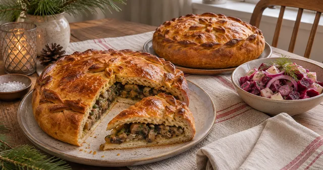

Новогодний стол с пирогами на 6–12 человек
Собрать меню с одним горячим блюдом и десертом.
Бриф выпуска
Три состава стола для 6, 8 и 12 гостей; пример с закусками; список закупок и таймлайн подачи.
Врезки: Таблица меню на 6/8/12 гостей · часы подготовки и подачи
До выпуска: Сверить расчёт с калькулятором и явно обозначить, где пироги служат основным блюдом.
/journal/novogodniy-stol-s-pirogami/
Полный бриф · OG-обложка